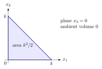

On a scalar Hopf manifold, the coordinate subspaces give a complete flag ending at a point of an elliptic fiber. Along this flag, a homogeneous section reduces to a nowhere-vanishing section on the elliptic fiber, so the last coordinate of its valuation is zero; the remaining coordinates fill a simplex whose intrinsic volume gives the section growth.
Let $X_ n$ and $L_ k$, with $n\geq 2$ and $k\geq 0$, be as in section 20.6. In the covering coordinates $z_1,\ldots ,z_ n$, the image of $\{ z_1=\cdots =z_{n-1}=0\} \setminus \{ 0\} $ in $X_ n$ is an elliptic curve; choose a point $p$ on it. Consider the flag $Y_0=X_ n$,
where $/\langle \mathrm e^{-1}\rangle $ denotes the quotient of the punctured linear subspace by the contraction $z\mapsto \mathrm e^{-1}z$. Each member is smooth, compact and connected, and is a prime divisor in the preceding member. Take $W_ m=H^0(X_ n,L_ k^ m)$.
Its $n$-dimensional volume is zero. When $k>0$, its volume in the coordinate hyperplane $x_ n=0$, with the Euclidean measure for which the coordinate lattice has covolume one, is
Proof.
By proposition 20.6.1, sections of $L_ k^ m$ are homogeneous polynomials of degree $km$. Dividing successively by the highest powers of $z_1,\ldots ,z_{n-1}$ that divide the section, and restricting at each step, leaves a nonzero multiple of $z_ n^{km-a_1-\cdots -a_{n-1}}$, where $a_ i$ is the $i$th valuation. This residual section has no zeros on $Y_{n-1}$, so the last valuation is zero, and the preceding ones are nonnegative with sum at most $km$.
Conversely, every such tuple is the valuation of the monomial
The normalized values lie in the displayed simplex and, for $m=1$, include all its vertices, so their closed convex hull is the simplex. For $k>0$, its coordinate-lattice volume is $k^{n-1}/(n-1)!$, the leading coefficient of the binomial count in proposition 20.6.1. For $k=0$, only the constant polynomials remain.
$\square$

21.1 For the Hopf threefold and $k>0$, the body is a triangle in a coordinate plane. Its area gives the quadratic section growth, while its ambient volume vanishes.